Sandfall Interactive · A Review
Clair Obscur
Expedition 33
“For those who come after.”
Acte I · The Countdown
Premise
The game is set in a dreamlike world inspired by the Belle Époque era, where society lives under the shadow of a yearly phenomenon called the Gommage. Every year, a godlike entity known as the Paintress awakens and paints a single number on a distant monolith, and every person whose age matches that number is instantly erased from existence. The number drops by one each year. A slow, creeping countdown toward total annihilation.
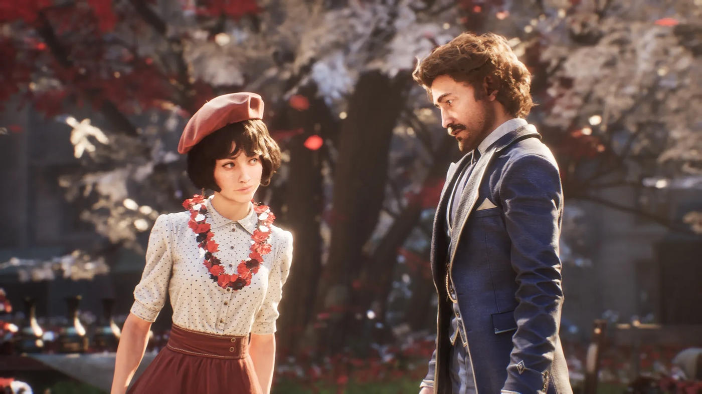
In response, the people of Lumière have been sending out expeditions across a shattered, surreal continent to find and kill the Paintress and end the cycle once and for all. Every expedition has failed. With only one year remaining before they too are erased, Gustave and the members of Expedition 33 set out on a final, desperate mission.
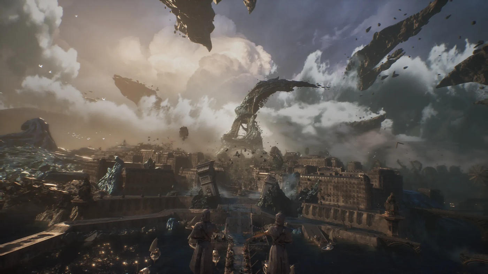
Acte II · Questions & Answers
Narrative Perspective
I really love how Clair Obscur's narrative method is mainly divided into two sections, the Question Arcs and the Answer Arcs (consider it French Ryukishi07 I guess). It's a huge point for immersiveness and really helps players engage with the story, from constantly pondering and questioning what the hell happens in Lumière, trying to connect the dots with scattered info fragments, guessing the meaning behind dialogue between mysterious people and so on, to later get struck with huge revelations and plot twists.
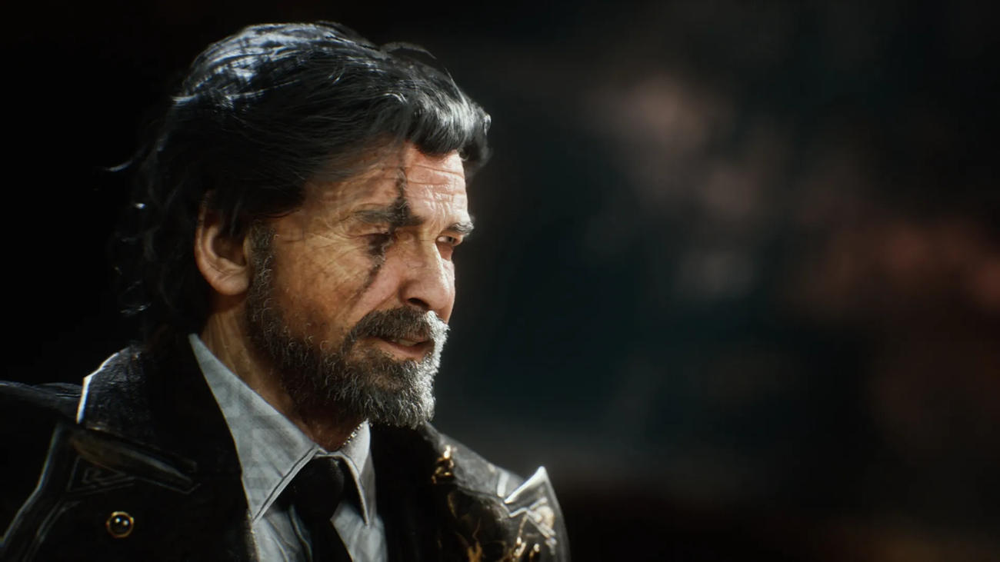
Sandfall Team succeeded in building hype throughout the game and gracefully executed a supreme ending. Clair Obscur did not give a typical ending you see in a game. It's a choice — you can choose how the game will end and it's a very messed up one. There is nothing like a True End or one that is able to give the best outcome; simply put, it questions your morality and creed. It's an ending worthy of discussion and debate because of how much personal weight it carries, strengthening the impression even after you finish the game.
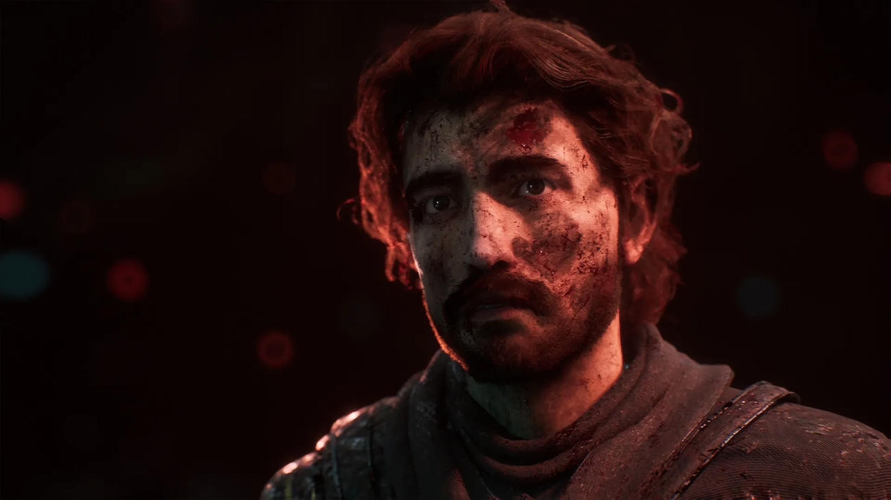
These lingering feelings are undoubtedly a major factor why Clair Obscur won the Game of the Year award.
Peoples also says that Clair Obscur is an JRPG without the Anime and i can see why. In this game you got:
- Fighting Gods
- Recruit Strange Creature as a teammates
- Harem (the furry guy doesn't count though)
- Relationship feature
- Heroine with step-sister archeotypes with mysterious backstory (based)
- Silly Minigame for special outfit
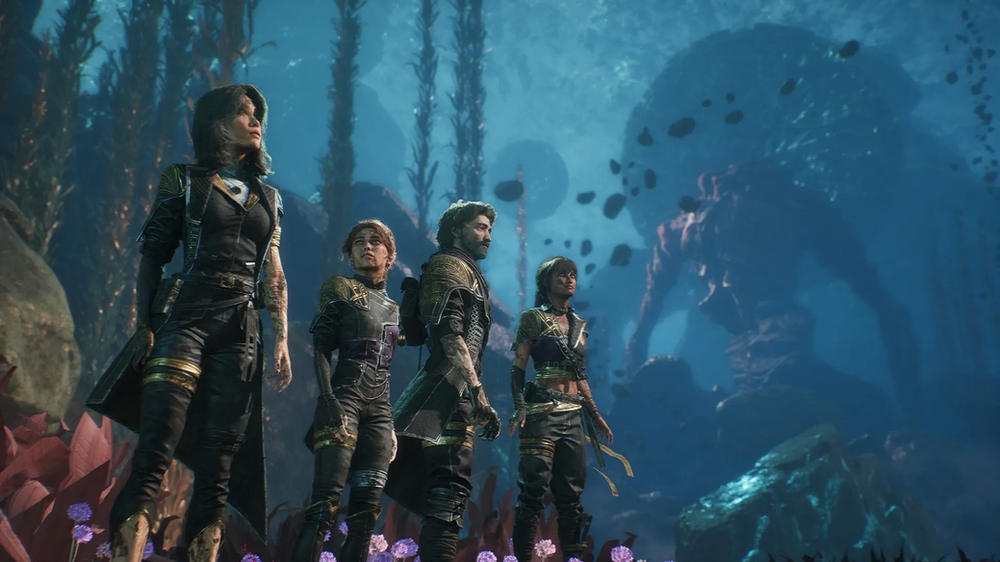
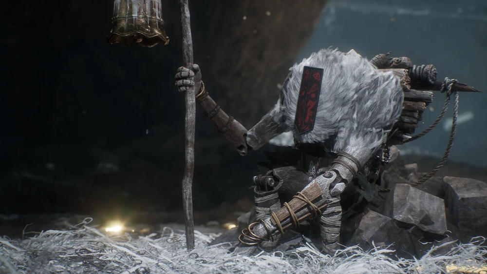
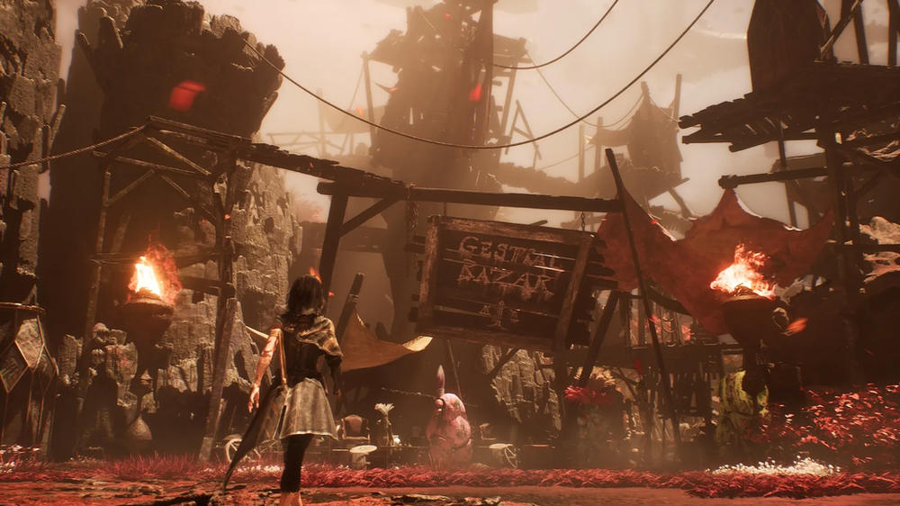
They really capture the classic JRPG tropes and modify them to be consumable for a broader audience, and in their unique French style indeed.
Acte III · Light & Dark
Art & Graphic Perspective
"Clair Obscur" means "Light and Dark" in French. Its design style is centered on using strong contrast between light and dark to give the illusion of volume and depth, giving it an artistic, unique game UI without sacrificing clarity and UX design. It also runs surprisingly smooth on the infamous Unreal Engine 5 optimization front too.
If I had one word to describe Clair Obscur, it would be "Cinematic." They put a generously huge amount of top quality cutscenes that feel straight out of movies, and that also applies to many boss attack patterns as well. I can't help but sometimes gaze in awe witnessing boss moves that are literally meant to kill you.
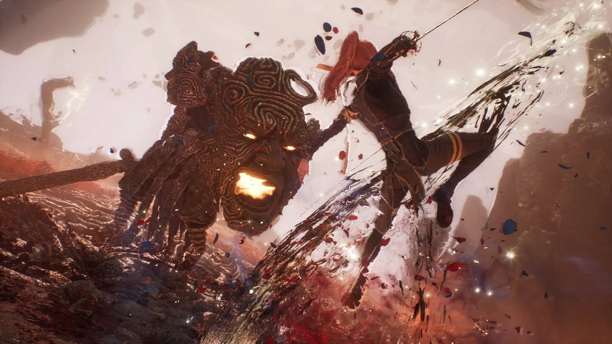
As if that doesn't do enough justice, they put along an orchestra-level OST in like every part of the game that it becomes the game's identity itself. Watching incredible scenes unfold symphonized with grand composed music, I can say Clair Obscur is a literal piece of art successfully conveyed into a medium called "Game."
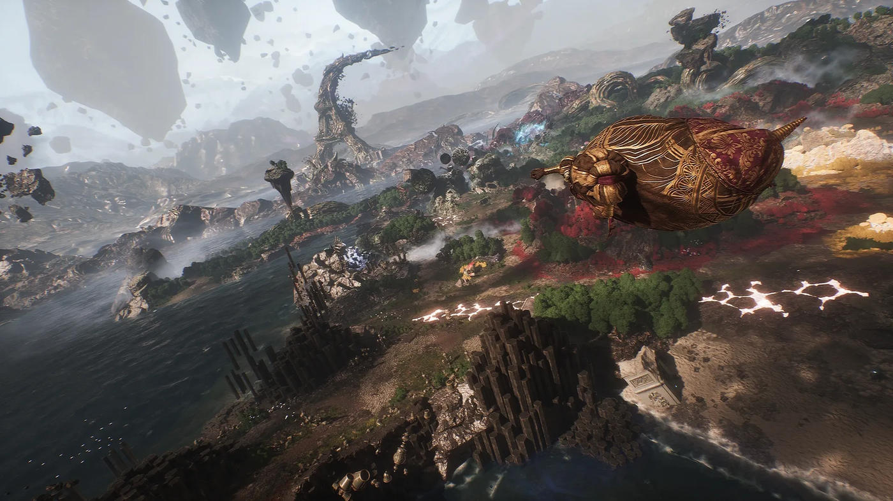
Acte IV · En Garde
Gameplay Perspective
The main problem with Clair Obscur's gameplay is its unique core system, the parry mechanics. Sure it feels new and fresh 7 hours into the game, but for the rest of the 60 hours? Well, I don't think adding a parry mechanic to a turn-based game is a great idea.
The parry mechanics are unbalanced. It is easy to execute (as in no restriction, whenever, whoever, and against ANYTHING) and it's too rewarding. Damage, skill points, break gauge, all the advantages are gained through just a couple of successful parries. What's worse is that Clair Obscur is supposed to be a turn-based genre, because…
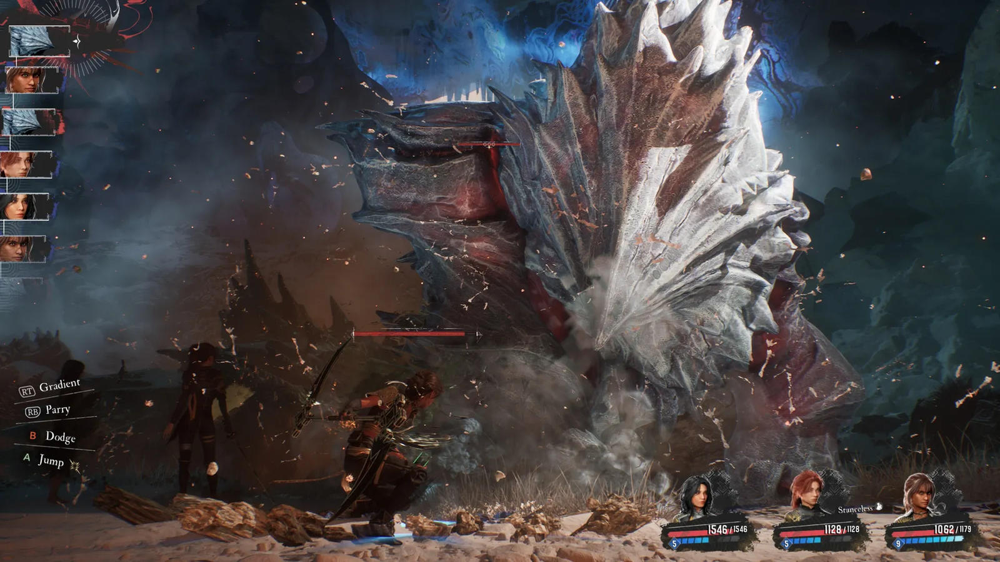
EVERY turn can become YOUR turn after a few observations of the enemy's attack pattern. And suddenly it's just a QTE game disguised as a turn-based game.
Playing Clair Obscur made me realize that one of the turn-based genre's charms is the inevitable pain your characters are going to endure. Balancing your comp synergy for both sustain and damage, racking your brain after failed attempts, getting one-shotted from bullshit unavoidable boss turns because you did not stack enough defense buffs, that's what makes a turn-based game exciting, and Clair Obscur just abolished it with one overused game mechanic.
The parry system also successfully RUINED the first half storytelling experience. An unconquered continent that massacred ALL 67 expeditions, thousands of soldiers, granting a tragic end for everyone that dares to challenge it should be unforgiving, threatening, full of suspense and thrill, yet it turns out to have a FULL lineup of creatures that bend with just one simple motion. Suddenly all enemies look trivial, defeatable with just enough consistency.
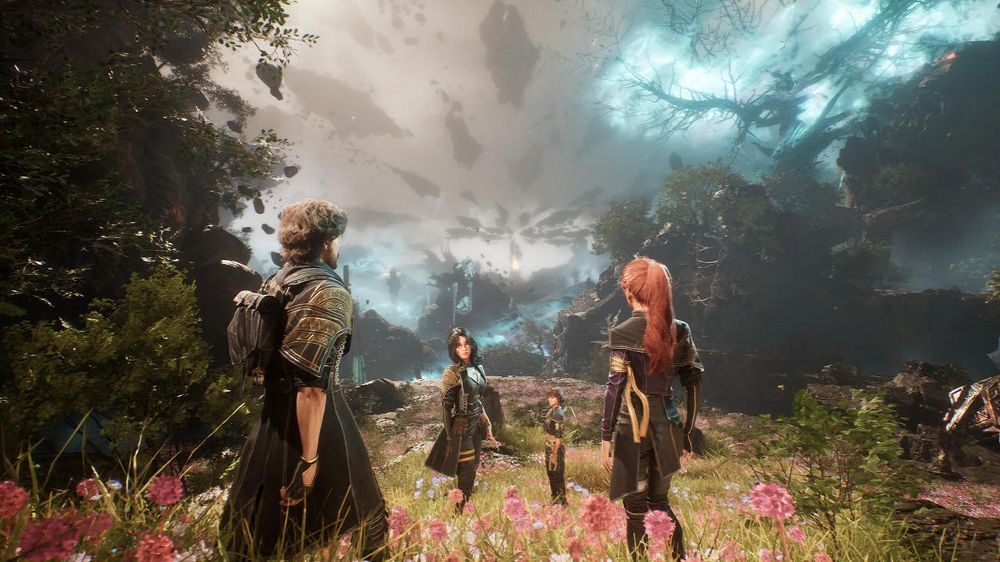
Sure, I tried to defeat some of the endgame enemies with low-mid level equipment and stats. Yes, it takes some time and hundreds of successful parries, but the impression waiting for me at the end is not satisfaction, most of it is just the sense of... wasted time. Why?
Typical games, like say an action game, give you choices when engaging with the enemy, especially in how they act
And so on, each move has its price, and it can give players a sense of intensity, pumping adrenaline and constantly delivering stimulation if done properly. Meanwhile turn-based games are mainly weak in those aspects; they instead demand synergizing, balancing team comp, and a good turn-based game usually requires thinking two or more turns ahead to achieve victory.
However, Clair Obscur's gameplay does not excel in either aspect, nor does it create a new experience. It only demands consistency, the intense feeling gets cooled down each player turn, synergizing means little, consequences of player actions get stripped, resulting in an overwhelmingly repetitive experience that drags on the longer the fight lasts. When a timed click is a regular option for winning the game, it's just a QTE game.
The parry mechanics make things even worse with no punishing aspect to keep them balanced, and that's also something Clair Obscur screwed up. There are like ZERO PUNISHING MECHANICS in this game. Even on Expert Mode, it gives you the option to instantly retry or just undo the encounter like nothing happened if you get defeated in a battle, despite many checkpoint-like symbols scattered around. It's a real shame, one of Clair Obscur's charms is those strange, gigantic, exotic-looking creatures wandering all around the continent, and the game just tells you that you can approach them without ANY consequences. Oh great, now it completely kills the suspense and anticipation. Honestly the enemy design alone holds great potential this game could bring, and now they just ruined it. Wonderful gambit, Sandfall Team.
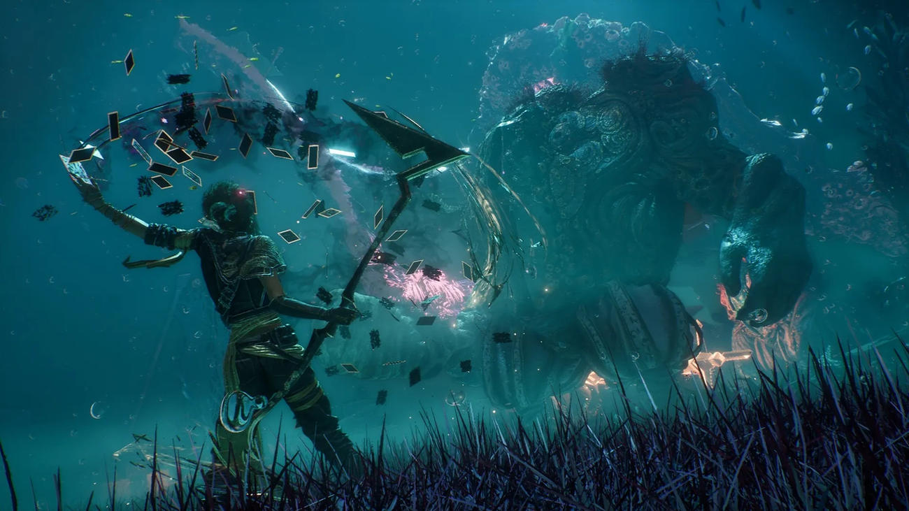
Even if they manage to fix the problematic mechanics, they still have a lot of homework to finish. A perfect example is the unbalanced damage output the player can bring (yes, I'm staring at you, Maelle). It's easy to notice how broken damage multiplier stacks can perform in Clair Obscur. Throughout the game, enemy difficulty and HP scale gradually, but the damage you, the player, can deal scales EXPONENTIALLY. All one-shots are possible with just a simple setup. Well, luckily the devs are aware of this, but instead of fixing it, they decided to add a simple and powerful feature, In-Game Mods. You can cap your own damage and multiply enemy HP up to 100x. For me, I think you should at least double the enemy HP to make sure it doesn't end too quickly. When a game needs mods just to make it at least fun, that is arguably an example of bad game design.
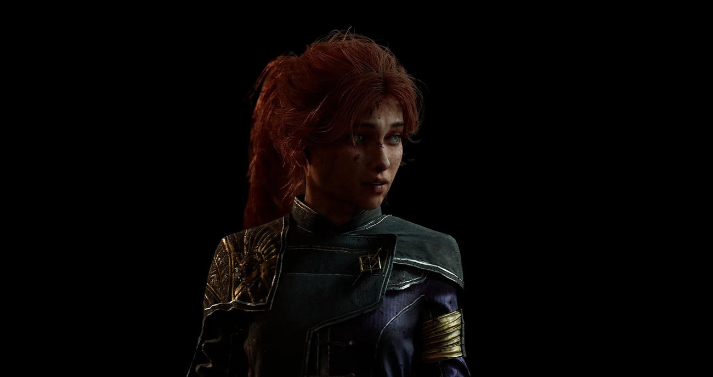
Oh, and there is also that annoying 9999 damage cap, but it later turns out to be part of the storytelling so it gets justified.
Aside from Gameplay mechanics, Clair Obscur also has clunky motion feels in the open world exploration, say, That single Attack animation to engage the enemy has misleading hitbox and range, kinda frustating especially when you challenge the Gestral Volley minigame.
Characters also get blood splatter shaders when their health drops below a certain threshold for "realism," but they just look like they bathed in a blood pool instead of actually looking grave and injured. It gets more vexing especially if your team strategy revolves around "deal more damage the lower the character's health is," which mine did.
The gun mechanic, or "Free Aim" as described in the game, on the other hand, is creative and balanced enough. It doesn't end the character's turn which gives the player more versatility to execute a strategy. A single bullet costs one AP, meaning it drains your capacity to use certain skills. Some enemies also have weak points you can shoot for a huge chunk of damage, and destructible objects you can break through shooting.
Many passives and a few skills also gain benefits from Free Aim that you can stack for great advantage. For example, you can deal a huge amount of damage without ending a turn, slap debuffs onto opponents, or even better, gain more AP. Now think about it, if a single bullet costs 1 AP and you can gain AP from it, that means you can turn your revolver into a semi-automatic machine gun that capable to deals more damage than using endgame skills, and it's a fully approved playstyle. They really added an FPS playstyle instead of improving the turn-based system.
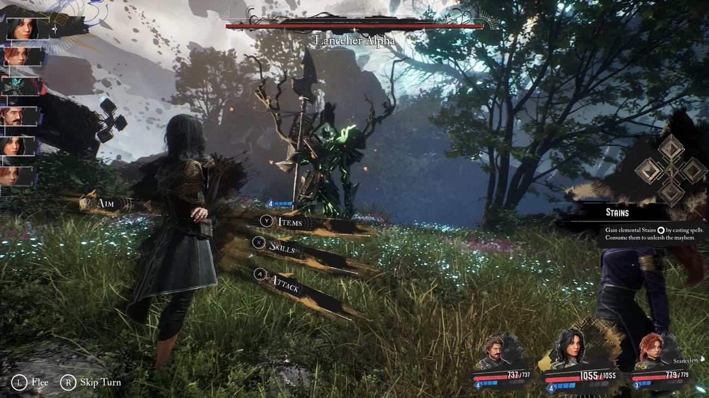
Acte V · Fin
Final Verdict
Clair Obscur: Expedition 33 excels in presentation. Sandfall Interactive orchestrates their top quality scenes and music so well that it’s akin to witnessing a grand opera. It's a game truly developed with great passion and effort. Highly recommended even for the narrative experience alone. As for the gameplay, simply put it's forgiving, too forgiving, in fact, to the point that it forces you to play casually. It's ideal for people with little to no experience in the turn-based genre. And what about seasoned turn-based RPG players, you ask? Well, you will probably enjoy the game too, only if you are, at least, not a masochist.